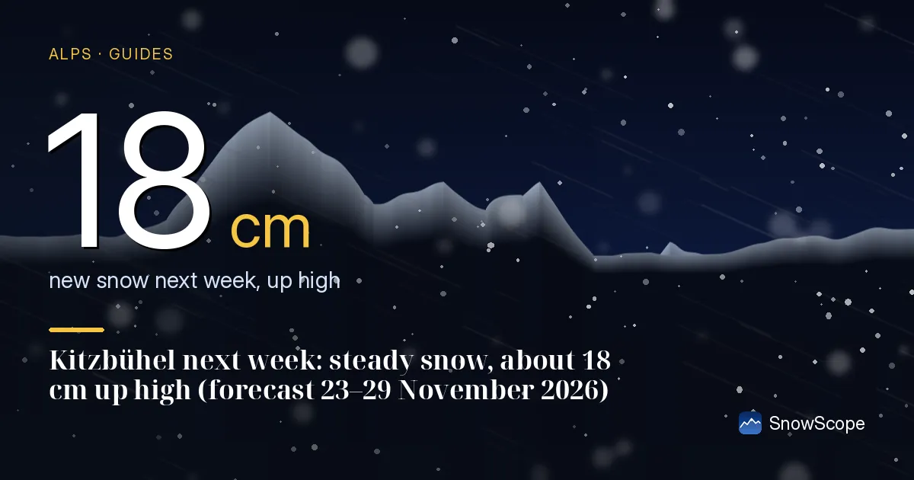
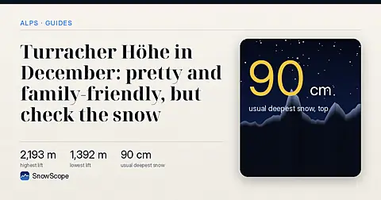

Kitzbühel next week: steady snow, about 18 cm up high (forecast 23–29 November 2026)
Next week (23–29 November) Kitzbühel sees 18 cm of snow at the top of the mountain in our central forecast, with the range 3 to 34 cm. This follows a quieter start to the week (10 cm at the top from 17–20 November). Two days drive most of the snow: Friday 27 and Sunday 29, when the top slopes gain 5 and 7 cm respectively.
See the live snow forecast for Kitzbühel in the SnowScope appSnow depth, powder alerts and the 3D map, free.

Snow depth by height
The forecast stacks like this: 18 cm near 1800 m (top), 18 cm near 1400 m (mid-slopes), 8 cm near 800 m (base). These are the middle values of our range. The low-to-high spread is 3–34 cm at the top, 3–32 cm at mid-mountain, and 2–14 cm at the base.
What does this spread mean? The difference between 3 cm and 34 cm at the top signals that a week ahead, the main snow system could still veer away from Kitzbühel or sit directly over it. Early-week days (23–24 November) are more certain; late-week days hold more uncertainty.
When the snow arrives
Friday 27 November delivers 5 cm at the top, possibly up to 8 cm. Sunday 29 November is the stronger event: 7 cm at the top in the middle case, up to 15 cm at the high end. Between these two days and before them, expect smaller amounts or dry spells.
Sunday 29 is the best day to be on the mountain next week. Even at 7 cm, it is enough to soften the pistes and add a fresh layer to the base. The high-end scenario of 15 cm would be a genuine refresh, though still not a powder day for the whole mountain.
Where to ski for the most snow
Hunt the high side of the mountain for depth. The Pass Thurn side is the coldest part of the area and holds snow best. The Resterhöhe and Pengelstein are your snow-sure zones; they lie above 1800 m and sit in colder air.
The lower runs near the town of Kitzbühel and the lower Hahnenkamm slopes are the weak link. At base elevation (800 m), 8 cm is modest, and mild spells or sun exposure will soften these runs quickly. If you are planning to ski wide pistes rather than hunt fresh snow, stay on the mid and upper slopes where the forecast promises more depth and better consistency.
How Kitzbühel compares
Three nearby big resorts show similar numbers for the same week. Saalbach (21 km away) forecasts 17 cm at the top, Mayrhofen (51 km away) 17 cm, and Hintertux (65 km away) 14 cm. Kitzbühel sits at 18 cm, so it is roughly level with its closer neighbours.
A few centimetres either way is well within the forecast's own uncertainty margin, so do not expect Kitzbühel to feel dramatically better or worse than Saalbach or Mayrhofen. Altitude and aspect (north-facing slopes stay colder) matter more than resort-to-resort differences.
The base you are skiing on
This week (17–20 November) leaves only 10 cm at the top of Kitzbühel, with barely any snow at the base. That means next week's 18 cm is the main deposit of the whole fortnight. The mountain is building from a thin start, so good conditions next week will feel like a step forward.
At the base (800 m), the forecast shows 8 cm for 23–29 November, with a range of 2–14 cm. If the low end hits, expect grass and rocks under the snow on the busy lower runs. Kitzbühel is low for a large resort, so the base relies on cold nights and snow-making to hold depth. Mid-mountain (1400 m) is the sweet spot: 18 cm, more reliable than the base, colder than low-altitude terrain.
What to pack and when to go
If you are planning a trip to Kitzbühel before 20 November, expect thin cover on the low slopes and reduced piste availability. Wait until after 22 November if you want to feel real depth under your skis. The window from 23 to 29 November is worth the wait: two decent snow days, colder temperatures aloft, and more reliable piste conditions across the mountain.
Bring base layers for cold upper-mountain air. The Pass Thurn side and high peaks can be windy and exposed. Sunglasses will help on 24–26 November if skies clear between the main snow events.
Tips for skiers
- Check the official avalanche bulletin of Tyrol before leaving the pistes, especially on steep north-facing terrain above 1800 m after Sunday 29 November.
- Confirm the resort's lift status before you travel: snow on the mountain does not mean all lifts are running early in the season.
- Plan around the top's 18 cm as your working number, and treat the high case of 34 cm as a bonus. The low case (3 cm) means poor conditions are possible.
- Ski Friday 27 or Sunday 29 for the freshest surface. The high slopes of the Pass Thurn side will be most rewarding.
- If you are staying at or near the base (800 m), budget time for a gondola or drag lift to the mid-mountain (1400 m) where snow cover is more consistent.
About these numbers
Resort snow depths are the deepest snow on the resort's upper slopes on the date shown; they are estimates for an area, not a measurement at one point. Forecasts can change. Always read the official avalanche bulletin before going off-piste.
Cite this report
For research, teaching or the press: the numbers and charts are free to reuse under CC BY 4.0 with this citation.
SnowScope (2026), Kitzbühel next week: steady snow, about 18 cm up high (forecast 23–29 November 2026), https://snowscope.app/blog/en/2026/11/kitzbuehel-snow-forecast-next-week-23-29-november-2026.html, accessed 2026-11-16
SnowScope (Atlas Labs). (2026, November 16). Kitzbühel next week: steady snow, about 18 cm up high (forecast 23–29 November 2026). SnowScope snow reports. https://snowscope.app/blog/en/2026/11/kitzbuehel-snow-forecast-next-week-23-29-november-2026.html
BibTeX
@misc{snowscope2026kitzbuehelsnowforecastne,
author = {{SnowScope (Atlas Labs)}},
title = {Kitzbühel next week: steady snow, about 18 cm up high (forecast 23–29 November 2026)},
year = {2026},
month = nov,
howpublished = {\url{https://snowscope.app/blog/en/2026/11/kitzbuehel-snow-forecast-next-week-23-29-november-2026.html}},
note = {Published 2026-11-16 11:43 UTC; accessed 2026-11-16}
}· CC BY 4.0 · Methods, data and tools →
Kitzbühel: snow and temperature by height, this winter vs last (tools) →
Follow Kitzbühel
Free: a message when fresh snow is coming, and the forecast every morning.
More snow reports

Turracher Höhe has 23 cm at mid-mountain on a typical 15 December, but only 39% of winters reach 30 cm there in mid-December. Data from 13 November 2026.

Discover the calm slopes of St-Luc Chandolin where mid-mountain snow has reached 30 cm in 98 % of winters during late December.

Ski 157 km of mapped runs in Serre Chevalier where the top of the mountain has a 100 % chance of snow by mid-December.